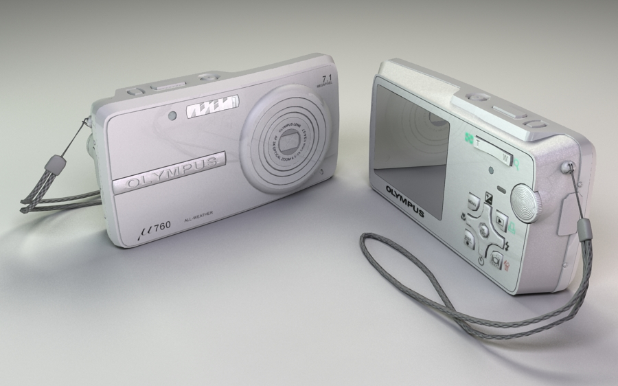

Home
Animations
Models
CV
Metal Slug Boat Game Asset

This was a personal project to create a realism camera within a budget. It was based on my Olympus MJU760. 4,887 polys. Roll over for wireframe.
Back to top